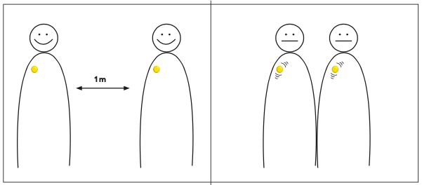

NOvid button
FHI recommends social distancing as one of the best way to prevent the spread of COVID 19. Therefore we invented the NOvid button. A pin you attach to your clothes to help keep distance.
But first, what is social distancing?
Information
ACCORDING TO REDD BARNA, school dropout is a continuous problem all over the world,especially in a country like Niger. Because of school shutdown due to COVID 19, many ofthese children will not return and the problem will only get bigger.FHI recommends social distancing as one of
the best way to prevent the spread of COVID 19.
Based on the Principles for Digital Development and the research questions; “How can attendance and enrolment data prevent dropout in school?” and “How can technology play a role in solving the issue?” we have decided to focus our innovation on how to solve dropout as a direct consequence of the pandemic. NOvid will make social distancing effortless.
Product
- The appearance of the NOvid is circular
- NOvid is waterproof because it is mainly for children, and should withstand play (with water) and fun
- It emits a vibration and a constant red light along the edge of the chip when it is within 1.25m from another
- NOvid is powered by a watch battery that is found in quartz watches, and lasts for about 1-2 years
- NOvid is on an NFC (near field communication) docking and will be activated as soon as it’s removed
- NOvid is attached with a clip, similar to a small microphone used in TV broadcasts
- It will be possible to personally customize a cover with an individual design that the pin can be placed in.
- NOvid will be approximately the same size as a 42mm wristwatch
Sources
APO Group (on behalf of Save the Children). (2020, 27. July). Coronavirus - Niger: 1.2 million children
and young people were out of school because of COVID-19. Hentet fra https://www.africanews. com/2020/07/27/coronavirus-niger-1-2-million-children-and-young-people-were-out-of-school-because- of-covid-19
Folkehelseinstituttet. (2020, 16. March). FHI presiserer råd om sosial distansering. Hentet fra https:// www.fhi.no/nyheter/2020/fhi-presiserer-rad-om-sosial-distansering/?fbclid=IwAR06yTwZ6dXLzEu_qXN- qtFTnnMdoJ4PV4Vz2otccSMLHZe0D2WtexFdON2E
Contact

Email:
novid@gmail.com

Phone:
+47 123 45 678

Instagram:
@novid